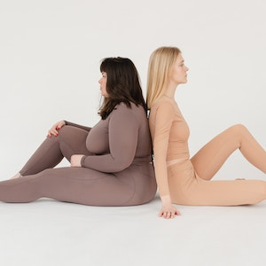
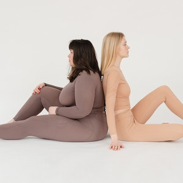

Area de actuación
La rehabilitación de una lesión del sistema osteoarticular, así como las lesiones musculares ya sean traumáticas o no requieren de una intervención adecuada para que la persona pueda volver a desarrollar todo su potencial. La intervención adecuada no solo se refiere a la aplicación de los agentes físicos apropiados a cada patología sino también de una atención personalizada que permita articular un plan específico de trabajo a fin de lograr la máxima recuperación de todas la capacidades físicas. Con el fin de no solo de sanar la patología, sino también de evitar futuras lesiones.


 
